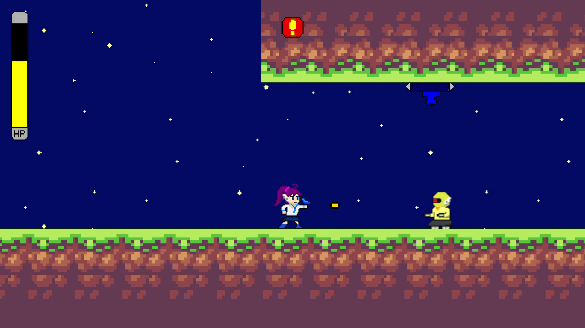
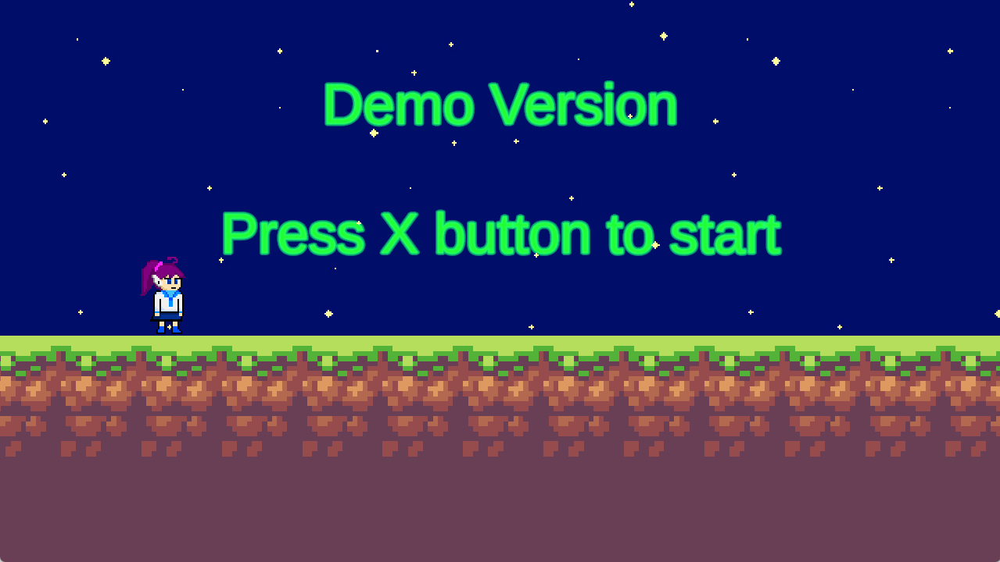
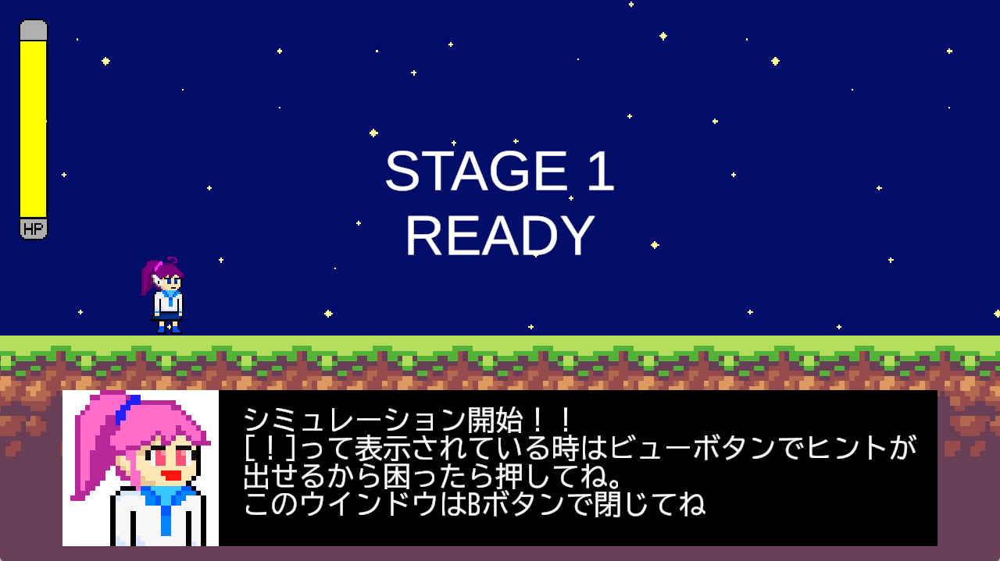

Unityで開発中の横スクロールアクションゲームです。
複数の武器を使い分けながらステージを攻略する2Dアクションゲームです。
アクションゲームに慣れている方にはスピード感のあるアクションを提供しつつ、
初心者向けに豊富な救済システムを用意する予定であり、
全ての方にゲームクリアーまで楽しんでもらう作品を目指しています。
2025年5月～現在
毎週何かしら進捗報告を出せるように少しずつ進めています。
1名
Unity 6
C#
Windows
企画、設計、実装、レベルデザイン、キャラクターデザイン、テスト
開発中・試遊実施済み
複数の方に試遊してもらったところ、想像以上に操作説明は読まれないものだと感じました。

まずタイトル画面でどのボタンを押すべきか詰まる方が大多数でした。

ゲーム開始直後にヒントの説明も出しているのですが、ここも読まれませんでした。
ここを読まないのでこの後のゲーム中のヒントもほとんど読まれません。
自分としてはかなり丁寧に説明をしていたつもりなのですが、そもそもの問題として「試しに少し遊んでみようと思っただけのゲームで細かい説明を受けたくないのでは」と感じました。
改めて振り返ると自分でもそういった経験がありました。
今後はいかにして遊びの中に説明を落とし込むかを考えていく必要があると考えています。
一部の音楽、画像については下記のフリー素材、アセットを使用させていただいております。